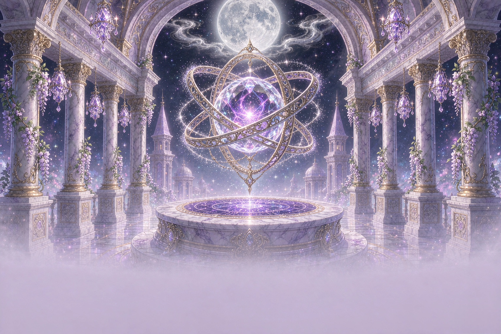
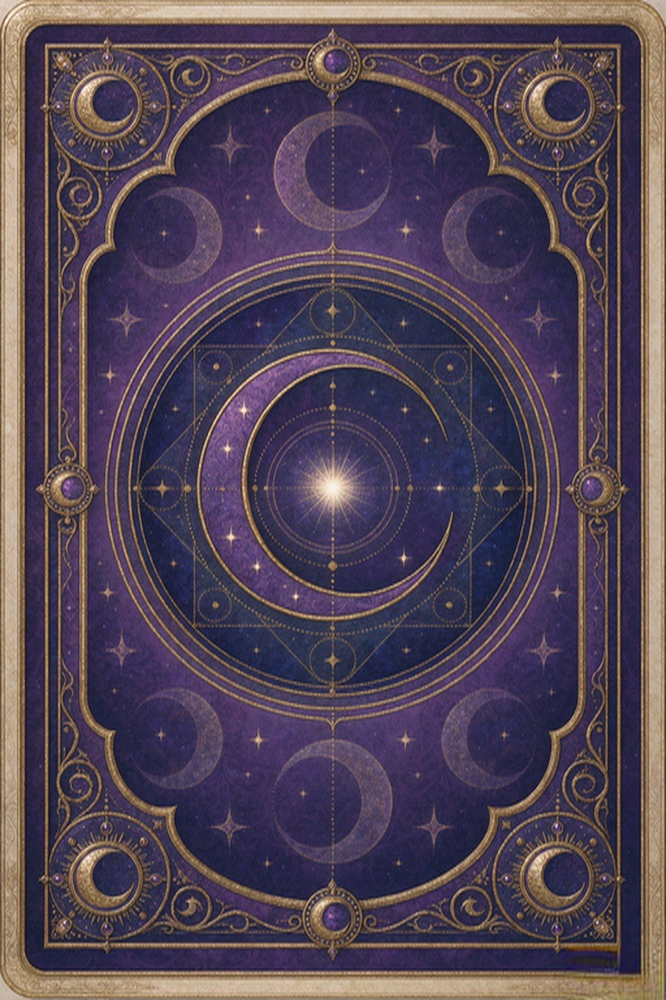

声音只在你第一次操作后才会响起，随时可以关掉。
尚未建立连接
每张牌都是一句话，但要先决定，你想问谁。
Choose your path
三条不同的路径，共用同一套七十八张原创牌组与同一套真实随机抽牌。 牌不会替你做决定，它只把你已经知道的事，换一个角度说给你听。
—

轻触牌背，翻开今天
One card, one day
牌已经替你在桌上放好了一张，但还扣着。今天的第一步，是先把它翻过来。